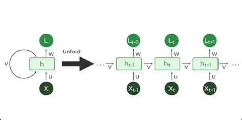
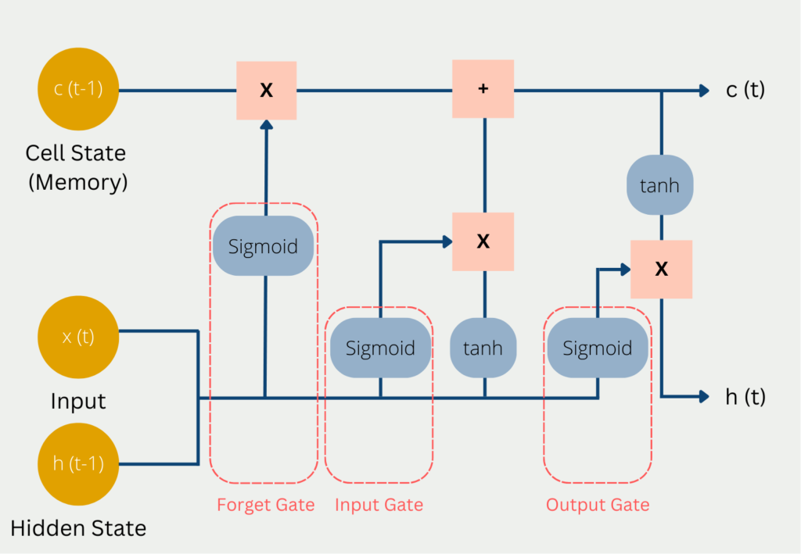
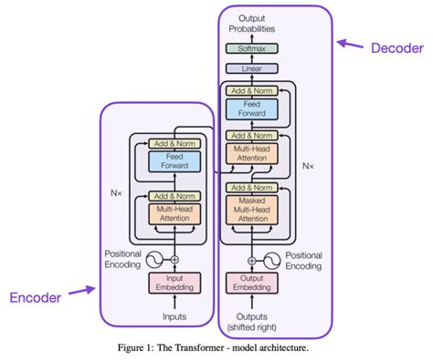

Transformer Architecture
Topics: Transformer architecture, encoder-decoder framework, Hugging Face ecosystem
Project milestone: Form teams, create the GitHub repo, set up the project and API keys, write a Transformer analysis
Contents (44 sections)
- Understanding Transformer Architecture
- Introduction
- Evolution of Sequence Models
- Transformer Architecture
- Key Components
- How a Sentence Flows Through the Model
- Code Implementation Examples
- Applications
- Further Resources
- Conclusion
- "Transformer — Complete Step-by-Step Guide with One Example"
- 1. Input Embedding
- 2. Positional Encoding
- 3. Self-Attention
- 4. Multi-Head Attention
- 5. Residual Connection + Layer Normalization
- 6. Feed-Forward Network (FFN)
- 7. Decoder
- 8. Linear + Softmax
- 9. Full Pipeline Overview
- 10. Key Facts (original paper)
- 11. Three Types of Transformer Models
- "Transformer: Questions & Answers"
- Q1. What is a Transformer?
- Q2. How does the Transformer solve the problems of RNNs / LSTMs?
- Q3. What are the main components of the Transformer?
- Q4. What is self-attention, and how does it work? (with example)
- Q5. What are Query, Key and Value? Why three vectors?
- Q6. What is the self-attention formula, and what does each part do?
- Q7. What is multi-head attention, and why use multiple heads?
- Q8. Why does the Transformer need positional encoding?
- Q9. What is the sin/cos positional-encoding formula, and why sine and cosine?
- Q10. What is masked self-attention, and why is it needed?
- Q11. How does cross-attention differ from self-attention?
- Q12. What are residual (skip) connections, and why do they help?
- Q13. What is layer normalization?
- Q14. What is the feed-forward network, and why is it needed?
- Q15. What are the three types of Transformer models?
- Q16. What are the key hyperparameters of the original Transformer?
- Q17. What is teacher forcing?
- Q18. How does the full translation pipeline work?
- Q19. How do encoder attention and decoder attention differ?
- Q20. Why is the Transformer better than a CNN for NLP?
- Q21 (Bonus). If Transformers process in parallel, why is text generation sequential?
Understanding Transformer Architecture
Companion pages linked from the lesson:
An interactive guide to modern neural networks.
Introduction
The Transformer architecture was introduced in the 2017 paper "Attention Is All You Need" by Vaswani et al. Earlier sequence models processed data one step at a time; the Transformer instead uses self-attention to process an entire sequence at once. This parallelism allows Transformers to:
- Capture long-range dependencies more effectively
- Train faster through parallel processing
- Scale to larger datasets and model sizes
- Reach state-of-the-art results on many NLP tasks
Key innovations
- Self-attention mechanism
- Multi-head attention
- Positional encodings
- Layer normalization
- Residual connections
Models built on the Transformer
- Large language models (GPT, LLaMA)
- Bidirectional encoders (BERT, RoBERTa)
- Text-to-image models (DALL-E, Stable Diffusion)
- Multimodal systems (CLIP, Flamingo)
Evolution of Sequence Models
Recurrent Neural Networks (RNNs)

- Slow, because they process sequences step by step
- Suffer from vanishing or exploding gradients
- Have a limited context window
- Struggle with long-range dependencies
Long Short-Term Memory (LSTM)

- Handle long-term dependencies better than vanilla RNNs
- Use gates to regulate information flow
- Reduce the vanishing-gradient problem
- Remain sequential and computationally expensive
Transformer
- Process sequences in parallel
- Use self-attention to model global context
- Scale efficiently with computing resources
- Avoid recurrence, which makes deeper architectures practical
Performance comparison
The table compares the three model families across sequence lengths and tasks such as machine translation, text summarization, text classification and question answering.
| Property | RNN | LSTM | Transformer |
|---|---|---|---|
| Processing | Sequential | Sequential | Parallel |
| Long-range dependencies | Poor | Better (gated) | Strong (global self-attention) |
| Gradient issues | Vanishing / exploding | Reduced | Largely avoided (residuals + LayerNorm) |
| Context | Limited window | Longer, still bounded | Whole sequence |
| Scalability | Low | Moderate | High |
Transformer Architecture
The Transformer consists of an encoder and a decoder, each built from a stack of identical layers. Every layer contains multi-head self-attention and a position-wise feed-forward network, wrapped with residual connections and layer normalization. (The original diagram has buttons to highlight the encoder, decoder and attention paths.)

Encoder
- Stacks N identical layers (N = 6 in the original paper)
- Each layer has two sub-layers: multi-head self-attention and a position-wise feed-forward network
- Residual connections and layer normalization surround each sub-layer
- Outputs a sequence of contextualized representations
Decoder
- Also stacks N identical layers
- Each layer has three sub-layers: masked multi-head self-attention, multi-head attention over the encoder output (cross-attention), and a position-wise feed-forward network
- Masking preserves the autoregressive property (a position may not attend to future positions)
- Outputs probabilities for predicting the next token
Positional encodings are added to the input embeddings before the first layer. The feed-forward inner dimension is typically 4× the model dimension.
Mathematical formulation
Scaled dot-product attention:
Multi-head attention:
Position-wise feed-forward network:
Layer normalization:
Key Components
Self-attention mechanism
Self-attention lets every position in a sequence attend to every other position. Step by step:
- Each token is projected into a query (Q), key (K) and value (V) vector through learned linear projections.
- Compatibility scores are computed between each query and all keys (dot product).
- Softmax turns the scores into attention weights.
- Each output is the weighted sum of the value vectors using those weights.
The scaling by √d_k keeps the dot products from growing large and pushing softmax into regions with extremely small gradients.
For example, take "The cat sat on the mat because it was tired." The word "it" refers to the cat: being tired fits a living thing, not a mat. Change one word, "The cat sat on the mat because it was soft.", and "it" now refers to the mat. A model has to use context to tell the two apart, and attention is how it does so: "it" puts most of its attention on the word it refers to. Open the Attention: what does "it" refer to? animation to compare the two sentences (the attention values there are illustrative), and the Self-attention animation to follow the computation step by step.
Multi-head attention
Instead of a single attention function, the model runs h attention heads in parallel, each with its own projection matrices, so it can attend to information from different representation subspaces at once. Benefits:
- Captures several kinds of relationships simultaneously
- Some heads focus on syntax, others on meaning
- Greater representational power
- An ensemble-like effect within a single layer
For example, in "The movie was great but too long." four heads can specialise in different relationships:
| Head | Focus |
|---|---|
| Head 1 | Subject–object relationships |
| Head 2 | Adjective–noun relationships |
| Head 3 | Entity recognition |
| Head 4 | Conjunction relationships |
Positional encoding
Because the Transformer has no recurrence or convolution, it needs explicit information about token order. Sinusoidal positional encodings are added to the input embeddings:
where pos is the token position and i is the dimension index. Sinusoids at different frequencies let the model learn to attend by relative position.
Viewed as a heatmap (positions as rows, dimensions as columns), low dimensions oscillate quickly and high dimensions slowly. Open the Positional encoding animation at the top of this lesson to explore it.
Feed-forward networks
Each encoder and decoder layer contains a fully connected network applied independently and identically at each position: two linear transformations with a ReLU between them.
- The inner (hidden) dimension is typically 4× the model dimension
- It adds non-linearity and substantially increases model capacity
For an input between −3 and 3, the first layer followed by ReLU produces a piecewise-linear function; a wider hidden layer (4× or 8×) can represent more complex shapes.
How a Sentence Flows Through the Model
Take the sentence "The transformer model revolutionized natural language processing with its attention mechanism." It passes through tokenization → embedding → positional encoding → attention → feed-forward → output, one stage at a time. The animations at the top of this lesson (tokenisation, positional encoding, self-attention) show each stage.
Attention patterns by task.
- Translation: how attention aligns source and target words when translating.
- Summarization: how the model concentrates attention on the key information in a passage.
- Question answering: how the model locates the answer span inside a context passage.
Code Implementation Examples
Self-attention implementation (PyTorch)
▶ Try it examples run inside this page, in your web browser — good for quick experiments with plain Python, NumPy, pandas, scikit-learn and matplotlib. From here on the examples need more:
- Everything else → GitHub Codespaces. PyTorch, Transformers, LangChain, LangGraph, MCP servers, Ollama, Django, Playwright and Streamlit need a full Python installation, large libraries, or programs that keep running — a web page has none of these. ⧉ Open in Codespaces gives you VS Code in your browser on a cloud machine already set up for this course, with this lesson's code in
notebooks/. Use it for all your coursework and your project, so everything runs in one environment (how to use it).
import torch
import torch.nn as nn
import math
class SelfAttention(nn.Module):
def __init__(self, embed_size, heads):
super().__init__()
self.embed_size = embed_size
self.heads = heads
self.head_dim = embed_size // heads
assert self.head_dim * heads == embed_size, "Embed size must be divisible by heads"
# Linear projections for queries, keys, values and the output
self.q_linear = nn.Linear(embed_size, embed_size)
self.k_linear = nn.Linear(embed_size, embed_size)
self.v_linear = nn.Linear(embed_size, embed_size)
self.fc_out = nn.Linear(embed_size, embed_size)
def forward(self, query, key, value, mask=None):
batch_size = query.shape[0]
# Project and split into heads: (batch, seq, heads, head_dim) -> (batch, heads, seq, head_dim)
q = self.q_linear(query).view(batch_size, -1, self.heads, self.head_dim).permute(0, 2, 1, 3)
k = self.k_linear(key).view(batch_size, -1, self.heads, self.head_dim).permute(0, 2, 1, 3)
v = self.v_linear(value).view(batch_size, -1, self.heads, self.head_dim).permute(0, 2, 1, 3)
# Scaled dot-product scores: (batch, heads, seq_q, seq_k)
scores = torch.matmul(q, k.permute(0, 1, 3, 2)) / math.sqrt(self.head_dim)
# Optional mask (used in the decoder)
if mask is not None:
scores = scores.masked_fill(mask == 0, float("-1e20"))
# Attention weights
attention = torch.softmax(scores, dim=-1)
# Weighted sum of values: (batch, heads, seq, head_dim)
out = torch.matmul(attention, v)
# Merge heads: (batch, seq, heads, head_dim) -> (batch, seq, embed_size)
out = out.permute(0, 2, 1, 3).contiguous().view(batch_size, -1, self.embed_size)
return self.fc_out(out)Simplified self-attention (JavaScript)
class SelfAttention {
constructor(embedSize, heads) {
this.embedSize = embedSize;
this.heads = heads;
this.headDim = Math.floor(embedSize / heads);
if (this.headDim * heads !== embedSize) {
throw new Error("Embed size must be divisible by heads");
}
// Weight matrices (random init, for demonstration only)
this.wQ = this.initializeWeights(embedSize, embedSize);
this.wK = this.initializeWeights(embedSize, embedSize);
this.wV = this.initializeWeights(embedSize, embedSize);
this.wO = this.initializeWeights(embedSize, embedSize);
}
initializeWeights(inputDim, outputDim) {
const w = [];
for (let i = 0; i < inputDim; i++) {
w.push([]);
for (let j = 0; j < outputDim; j++) {
w[i].push((Math.random() - 0.5) * 0.1);
}
}
return w;
}
matMul(a, b) {
const result = [];
for (let i = 0; i < a.length; i++) {
result.push([]);
for (let j = 0; j < b[0].length; j++) {
let sum = 0;
for (let k = 0; k < b.length; k++) sum += a[i][k] * b[k][j];
result[i].push(sum);
}
}
return result;
}
softmax(arr) {
const max = Math.max(...arr);
const exps = arr.map(x => Math.exp(x - max));
const sum = exps.reduce((s, x) => s + x, 0);
return exps.map(x => x / sum);
}
transpose(matrix) {
return matrix[0].map((_, j) => matrix.map(row => row[j]));
}
forward(inputs, mask = null) {
// inputs: one sequence, shape (seqLength x embedSize)
const seqLength = inputs.length;
// Linear projections
const Q = this.matMul(inputs, this.wQ);
const K = this.matMul(inputs, this.wK);
const V = this.matMul(inputs, this.wV);
// (Head splitting / tensor reshaping omitted in this simplified version)
// Scores = Q * K^T, scaled by sqrt(d_k). Without head splitting the dot products run over
// all embedSize dimensions, so d_k = embedSize (with heads it would be headDim).
const scores = this.matMul(Q, this.transpose(K));
const scaledScores = scores.map(row =>
row.map(s => s / Math.sqrt(this.embedSize))
);
// Mask placeholder (no logic in the demo)
if (mask) { /* apply mask */ }
// Softmax over each row -> attention weights
const attentionWeights = scaledScores.map(row => this.softmax(row));
// Weighted sum of values
const output = this.matMul(attentionWeights, V);
return this.matMul(output, this.wO);
}
}
// Try it: one sequence of 4 tokens, embedding size 8, 2 heads
const attn = new SelfAttention(8, 2);
const tokens = Array.from({ length: 4 }, () => Array.from({ length: 8 }, () => Math.random()));
const out = attn.forward(tokens);
console.log("input shape: ", tokens.length, "x", tokens[0].length);
console.log("output shape:", out.length, "x", out[0].length);
console.log("first output vector:", out[0].map(v => v.toFixed(4)).join(", "));Using Transformers with libraries (Hugging Face)
import torch
from transformers import AutoModel, AutoTokenizer
model_name = "bert-base-uncased"
tokenizer = AutoTokenizer.from_pretrained(model_name)
model = AutoModel.from_pretrained(model_name)
text = "Understanding transformers is fascinating."
inputs = tokenizer(text, return_tensors="pt")
with torch.no_grad():
outputs = model(**inputs)
last_hidden_state = outputs.last_hidden_state
pooled_output = outputs.pooler_output
print(f"Hidden state shape: {last_hidden_state.shape}") # [batch_size, sequence_length, hidden_size]
print(f"Pooled output shape: {pooled_output.shape}") # [batch_size, hidden_size]Applications
Natural language processing
Machine translation (e.g. Google Translate), text summarization, sentiment analysis, named entity recognition, question answering, and text generation with GPT models.
Computer vision
Vision Transformers (ViT), image classification, object detection, image segmentation, image generation (DALL-E, Stable Diffusion), and video understanding.
Multimodal AI
CLIP (linking text and images), text-to-image generation, image captioning, visual question answering, audio-visual understanding, and multimodal chatbots.
Notable transformer-based models
| Model | Architecture type | Key features | Applications |
|---|---|---|---|
| BERT | Encoder-only | Bidirectional training with masked-token prediction | Text classification, NER, question answering |
| GPT (1–4) | Decoder-only | Autoregressive training, growing model size | Text generation, creative writing, coding, chatbots |
| T5 | Encoder–decoder | Every task framed as text-to-text | Translation, summarization, classification |
| ViT | Encoder-only (vision) | Images treated as sequences of 16×16 patches | Image classification, object detection |
| DALL-E / Stable Diffusion | Generative image models with transformer components (autoregressive in DALL-E 1, diffusion in DALL-E 2 and Stable Diffusion) | Text conditioning, latent diffusion | Text-to-image generation, image editing |
Model explorer — BERT. Uses only the encoder and is trained bidirectionally. Pre-training objectives: masked language modeling and next-sentence prediction. Variants: BERT-base (12 layers) and BERT-large (24 layers). Uses: text classification, NER, question answering, sentiment analysis, document retrieval.
Further Resources
Key academic papers
- Vaswani et al. (2017), "Attention Is All You Need" — the original Transformer paper. https://arxiv.org/abs/1706.03762
- Devlin et al. (2018), "BERT: Pre-training of Deep Bidirectional Transformers" — introduced BERT. https://arxiv.org/abs/1810.04805
- Brown et al. (2020), "Language Models are Few-Shot Learners" — introduced GPT-3. https://arxiv.org/abs/2005.14165
- Dosovitskiy et al. (2020), "An Image is Worth 16x16 Words" — the ViT paper. https://arxiv.org/abs/2010.11929
Tutorials and courses
- The Illustrated Transformer (Jay Alammar), visual guide. http://jalammar.github.io/illustrated-transformer/
- "Attention Is All You Need" video explanation. https://www.youtube.com/watch?v=TQQlZhbC5ps
- Hugging Face NLP Course (free, practical). https://huggingface.co/course
- DeepLearning.AI NLP Specialization. https://www.deeplearning.ai/courses/
Libraries and implementations
- Hugging Face Transformers, the most popular library for pre-trained models. https://github.com/huggingface/transformers
- PyTorch native transformer layers. https://pytorch.org/docs/stable/nn.html#transformer-layers
- TensorFlow transformer tutorial. https://www.tensorflow.org/text/tutorials/transformer
Community and discussion
- Hugging Face Forums: https://discuss.huggingface.co/
- r/MachineLearning: https://www.reddit.com/r/MachineLearning/
- AI Stack Exchange: https://ai.stackexchange.com/
-
NLProc on Twitter: https://twitter.com/hashtag/NLProc
Conclusion
Transformers have changed AI, enabling advances in language understanding, generation and multimodal reasoning. The self-attention design is both effective and scalable. Main advantages:
- Parallel sequence processing, overcoming the limits of RNNs
- Effective capture of long-range dependencies through self-attention
- A flexible architecture that applies well beyond NLP
- Scalability to very large models with steady performance gains
- A foundation for state-of-the-art systems across many applications
"Transformer — Complete Step-by-Step Guide with One Example"
Intermediate · ~30 minutes · AI Applications
In this guide we follow one example sentence through the whole Transformer, computing every stage by hand with small example numbers:
Input (English): I love learning Output (Arabic): أنا أحب التعلم
Real models use large vectors (d_model = 512). To keep the arithmetic readable, the example uses vectors of size 4 (embedding) and size 3 (attention).
1. Input Embedding
Each word is first converted into a vector of numbers (its embedding). These values are learned during training, so words with similar meanings end up with similar vectors.
In the example each word becomes a vector of 4 dimensions (real models use 512):
"I" → [0.2, 0.5, 0.1, 0.8]
"love" → [0.9, 0.3, 0.7, 0.2]
"learning" → [0.4, 0.6, 0.5, 0.9]2. Positional Encoding
The Transformer processes all words in parallel, so it has no built-in notion of word order. To tell the model where each word is, a position vector is added to each embedding.
The position vectors are built with sine and cosine functions:
PE(pos, 2i) = sin( pos / 10000^(2i/d) )
PE(pos, 2i+1) = cos( pos / 10000^(2i/d) )pos= position of the word in the sentence (0, 1, 2, …)i= index of the dimensiond= model dimension
Early dimensions change quickly from one position to the next and later dimensions change slowly — like the hands of a clock — so every position gets a unique pattern.
Positional encoding vectors for our 3 positions (d = 4):
PE₀ ("I", pos 0) → [0.00, 1.00, 0.00, 1.00]
PE₁ ("love", pos 1) → [0.84, 0.54, 0.01, 1.00]
PE₂ ("learning", pos 2) → [0.91, -0.42, 0.02, 1.00]Embedding + Positional Encoding:
"I" → [0.2, 0.5, 0.1, 0.8] + [0.00, 1.00, 0.00, 1.00] = [0.20, 1.50, 0.10, 1.80]
"love" → [0.9, 0.3, 0.7, 0.2] + [0.84, 0.54, 0.01, 1.00] = [1.74, 0.84, 0.71, 1.20]
"learning" → [0.4, 0.6, 0.5, 0.9] + [0.91, -0.42, 0.02, 1.00] = [1.31, 0.18, 0.52, 1.90]These three vectors are the input X to the encoder.
3. Self-Attention
Self-attention lets each word ask: "which other words in the sentence matter for my meaning?"
Step 3.1 — Create Query, Key and Value
Each input vector is multiplied by three learned weight matrices:
Q = X × Wq (Query — what the word is looking for)
K = X × Wk (Key — what the word offers to be matched against)
V = X × Wv (Value — the information the word passes on)For readability the example uses simplified vectors of size 3 (d_k = 3):
Q K V
"I" [1, 0, 1] [0, 1, 1] [1, 0, 0]
"love" [0, 1, 0] [1, 1, 0] [0, 1, 0]
"learn" [1, 1, 0] [0, 0, 1] [0, 0, 1]Step 3.2 — Attention scores: Q × Kᵀ
Each Query is dot-multiplied with every Key:
Scores = Q × Kᵀ
I love learn
"I" [ 1, 1, 1 ]
"love" [ 1, 1, 0 ]
"learn" [ 1, 2, 0 ]Step 3.3 — Scale by √d_k
Dividing by √d_k (√3 ≈ 1.73) keeps the scores from becoming too large, which would push softmax into saturation (outputs near 0 or 1) and slow learning:
Scaled = Scores / √3
"I" [0.58, 0.58, 0.58]
"love" [0.58, 0.58, 0.00]
"learn" [0.58, 1.15, 0.00]Step 3.4 — Softmax
Softmax converts each row into probabilities that sum to 1:
Attention weights
"I" [0.33, 0.33, 0.33]
"love" [0.39, 0.39, 0.22]
"learn" [0.30, 0.53, 0.17]Notice that "learning" pays the most attention to "love" (0.53) — the model has linked the two semantically related words.
Step 3.5 — Multiply by V
Each output is the weighted sum of the Value vectors:
Output = softmax(Q × Kᵀ / √d_k) × V
"I" → [0.33, 0.33, 0.33]
"love" → [0.39, 0.39, 0.22]
"learn" → [0.30, 0.53, 0.17]The complete formula:
Attention(Q, K, V) = softmax( Q × Kᵀ / √d_k ) × V4. Multi-Head Attention
Instead of running attention once, the Transformer runs it several times in parallel. Each run is a head with its own Wq, Wk, Wv, and each head learns a different kind of relationship — e.g. grammar, nearby words, or meaning. The original model uses 8 heads.
head₁ = Attention(X×Wq¹, X×Wk¹, X×Wv¹)
head₂ = Attention(X×Wq², X×Wk², X×Wv²)
...
head₈ = Attention(X×Wq⁸, X×Wk⁸, X×Wv⁸)
MultiHead(Q, K, V) = Concat(head₁, …, head₈) × WᴼThe example uses 2 heads for the word "learn":
Head 1 ("learn") → [0.30, 0.53, 0.17]
Head 2 ("learn") → [0.45, 0.10, 0.45]
Concat → [0.30, 0.53, 0.17, 0.45, 0.10, 0.45]
× Wᴼ (project back) → [0.30, 0.40, 0.30]5. Residual Connection + Layer Normalization
Residual (skip) connection
The input of each sub-layer is added back to its output. This preserves the original information and helps gradients flow through deep networks (prevents vanishing gradients):
output = x + Sublayer(x)Layer Normalization
The result is then normalized to zero mean and unit variance, followed by learnable scale (γ) and shift (β):
LayerNorm(x) = (x − μ) / √(σ² + ε) × γ + βWorked example for "learn" (first 3 dimensions):
x (input) = [1.31, 0.18, 0.52]
Attention output = [0.30, 0.53, 0.17]
After residual = [1.61, 0.71, 0.69]
μ (mean) = 1.00
σ² (variance) = 0.18
√(σ² + ε) ≈ 0.43
LayerNorm output = [1.41, -0.68, -0.73]6. Feed-Forward Network (FFN)
Each position is passed independently through a small two-layer network. The first layer expands the dimension (512 → 2048 in the real model), a ReLU sets negative values to zero, and the second layer projects back to the original size:
FFN(x) = max(0, x × W₁ + b₁) × W₂ + b₂Worked example:
Input = [1.41, -0.68, -0.73]
After W₁ + b₁ = [2.1, -0.3, 1.5, -1.2]
After ReLU = [2.1, 0.0, 1.5, 0.0]
After W₂ + b₂ = [0.8, 0.5, 0.3]A second residual connection + LayerNorm follows the FFN. The result is the encoder output — a contextualized representation of every input word. The whole encoder block (sections 3–6) is repeated 6 times.
7. Decoder
The decoder generates the translation one word at a time. Suppose it has already produced "أنا" and "أحب" and is now generating the third word (shown as ???):
Decoder input so far: ["أنا", "أحب", ???]Each decoder layer has three sub-layers.
7.1 Masked Self-Attention
The decoder must not look at future words (they have not been generated yet). Future positions are masked by setting their scores to −∞ before softmax, so they get a weight of exactly 0.
Scores before mask After mask After softmax
أنا أحب ??? أنا أحب ??? أنا أحب ???
"أنا" [0.8, 0.5, 0.3] "أنا" [0.8, -∞, -∞ ] "أنا" [1.00, 0.00, 0.00]
"أحب" [0.6, 0.9, 0.4] "أحب" [0.6, 0.9, -∞ ] "أحب" [0.43, 0.57, 0.00]
"???" [0.3, 0.7, 0.8] "???" [0.3, 0.7, 0.8] "???" [0.24, 0.36, 0.40]Each word attends only to itself and the words before it.
7.2 Cross-Attention (Encoder–Decoder Attention)
Here the decoder looks at the input sentence:
- Q comes from the decoder (the Arabic words so far)
- K and V come from the encoder output (the English words)
Q for "???" = [0.5, 0.8, 0.3]
Scores against encoder keys:
"I" → 0.53
"love" → 0.90
"learning" → 0.83
Softmax → [0.26, 0.38, 0.36]The third Arabic word attends most strongly to "love" and "learning" — exactly the English words it needs to translate.
7.3 Feed-Forward + Residual + LayerNorm
As in the encoder. The decoder block is also repeated 6 times.
8. Linear + Softmax
The final decoder vector is projected by a linear layer onto the whole vocabulary (which can be ~50,000 words), then softmax turns the scores into probabilities:
Decoder output for "???" = [0.25, 0.60, 0.15]
Linear → Softmax over the vocabulary:
"أنا" → 0.02
"أحب" → 0.05
"التعلم" → 0.85 ← highest
"كتاب" → 0.03
"بيت" → 0.05The word with the highest probability, "التعلم", is selected.
Final output: أنا أحب التعلم ✅
9. Full Pipeline Overview
ENCODER (×6 layers) DECODER (×6 layers)
┌────────────────────────────────────────┐ ┌────────────────────────────────────────────┐
│ "I love learning" │ │ Output so far: ["أنا", "أحب", ...] │
│ ↓ │ │ ↓ │
│ Input Embedding │ │ Output Embedding │
│ ↓ │ │ ↓ │
│ + Positional Encoding │ │ + Positional Encoding │
│ ↓ │ │ ↓ │
│ Multi-Head Self-Attention │ │ Masked Multi-Head Self-Attention │
│ ↓ │ │ ↓ │
│ Add & LayerNorm │ │ Add & LayerNorm │
│ ↓ │ │ ↓ │
│ Feed-Forward Network │ ───► │ Cross-Attention (Q: decoder, K,V: encoder)│
│ ↓ │ │ ↓ │
│ Add & LayerNorm │ │ Add & LayerNorm │
│ ↓ │ │ ↓ │
│ Encoder output (contextual vectors) │ │ Feed-Forward Network │
└────────────────────────────────────────┘ │ ↓ │
│ Add & LayerNorm │
│ ↓ │
│ Linear → Softmax │
│ ↓ │
│ Next word: "التعلم" │
└────────────────────────────────────────────┘
Final output: أنا أحب التعلم10. Key Facts (original paper)
| Item | Value |
|---|---|
| Paper | "Attention Is All You Need" (2017), Vaswani et al., Google |
| Encoder layers | 6 |
| Decoder layers | 6 |
| d_model (embedding size) | 512 |
| Attention heads (h) | 8 |
| d_k per head | 512 / 8 = 64 |
| Feed-forward inner dimension (d_ff) | 2048 |
| Optimizer | Adam with warmup and decay |
| Loss function | Cross-entropy |
| Decoder training technique | Teacher forcing (feed the correct previous token) |
11. Three Types of Transformer Models
| Type | Examples | How it works | Typical uses |
|---|---|---|---|
| Encoder-only | BERT, RoBERTa, DistilBERT | Bidirectional — sees the whole input at once | Classification, Named-Entity Recognition, understanding tasks |
| Decoder-only | GPT family (GPT-2, GPT-3, GPT-4, …) | Autoregressive — predicts left to right | Text generation, chat |
| Encoder–Decoder | Original Transformer, BART, T5 | Full sequence-to-sequence | Translation, summarization |
"Transformer: Questions & Answers"
21 questions covering every component of the Transformer architecture. Intermediate · 21 Questions · Covers All Components · Exam Ready
Q1. What is a Transformer?
A Transformer is a deep learning architecture introduced in the 2017 paper "Attention Is All You Need" by Vaswani et al. (Google).
- It processes an entire sequence in parallel using self-attention, with no recurrence and no convolution.
- It consists of an Encoder (understands the input) and a Decoder (generates the output).
- It is the foundation of modern NLP models: BERT, GPT, T5, BART, and today's large language models.
Q2. How does the Transformer solve the problems of RNNs / LSTMs?
| Problem with RNN / LSTM | Transformer solution |
|---|---|
| Sequential processing — words must be processed one after another, which is slow | Processes all words in parallel |
| Vanishing gradients over long sequences | Residual connections + Layer Normalization keep gradients flowing |
| Long-range dependencies are hard to capture (information fades over many steps) | Self-attention relates every word to every other word directly, in one step |
| Limited scalability | Parallelism makes full use of GPUs, so models scale to billions of parameters |
Q3. What are the main components of the Transformer?
- Input Embedding — converts each token to a vector.
- Positional Encoding — adds word-order information.
- Multi-Head Self-Attention — each word attends to all other words.
- Feed-Forward Network (FFN) — a two-layer network applied to each position.
- Residual Connections + Layer Normalization — around every sub-layer.
- Linear + Softmax output layer — in the decoder, predicts the next word.
The encoder stacks (3)(4)(5); the decoder adds masked self-attention and cross-attention before its FFN, then ends with (6).
Q4. What is self-attention, and how does it work? (with example)
Self-attention lets each word look at all other words in the sentence and decide how much each one matters for its own meaning.
Example: "The cat sat on the mat because it was soft." — to understand "it", the model attends to all words and gives the highest attention score to "mat" (not "cat"), because "soft" fits a mat.
Steps:
- Create Query (Q), Key (K) and Value (V) vectors for every word.
- Compute the scores:
Score = Q × Kᵀ - Scale by √dₖ
- Apply softmax to turn scores into probabilities (weights that sum to 1).
- Multiply the weights by V to get the weighted output for each word.
Q5. What are Query, Key and Value? Why three vectors?
| Vector | Meaning |
|---|---|
| Query (Q) | What the current word is looking for |
| Key (K) | What each word offers to be matched against |
| Value (V) | The actual information a word passes on once it is attended to |
Library analogy: your Query is what you type into the search; the Keys are the index entries of the books; the Values are the contents of the books you then read.
Why three separate vectors? Because keeping them separate lets the model learn different representations for the three roles: how a word searches, how it gets found, and what it contributes. Using one vector for all three would force a single representation to do all three jobs.
Q6. What is the self-attention formula, and what does each part do?
Attention(Q, K, V) = softmax( Q × Kᵀ / √dₖ ) × V| Part | Role |
|---|---|
Q × Kᵀ |
Dot product of each Query with every Key → a relevance score between every pair of words |
/ √dₖ |
Scaling. Large dot products would push softmax into near-0 / near-1 outputs (saturation) and slow down learning; dividing by √dₖ keeps the scores in a healthy range |
softmax(…) |
Turns each row of scores into weights that sum to 1 |
× V |
Weighted sum of the Value vectors — the context-aware output of each word |
Q7. What is multi-head attention, and why use multiple heads?
Instead of one attention computation, the Transformer runs h heads in parallel, each with its own learned projection matrices. Their outputs are concatenated and projected once more:
MultiHead(Q, K, V) = Concat(head₁, …, headₕ) × Wᴼ
headᵢ = Attention( Q × WᵢQ, K × WᵢK, V × WᵢV )Why multiple heads?
- Each head can specialize in a different kind of relationship — e.g. one head learns grammar (subject–verb), one learns nearby words, one learns meaning (semantic similarity).
- Several "views" of the sentence are combined into a richer representation.
- Original Transformer: 8 heads, each with dimension 64 (512 / 8).
Q8. Why does the Transformer need positional encoding?
Self-attention treats the input as a set: it processes all tokens at once and has no built-in notion of order. Without position information, these two sentences look identical to the model:
"The cat ate the fish" = "The fish ate the cat"Positional encoding adds a position-specific vector to every token embedding so the model knows where each word is.
Q9. What is the sin/cos positional-encoding formula, and why sine and cosine?
PE(pos, 2i) = sin( pos / 10000^(2i/d) )
PE(pos, 2i+1) = cos( pos / 10000^(2i/d) )pos— position of the token;i— dimension index;d— model dimension.- Even dimensions use sine, odd dimensions use cosine.
Why sin and cos?
- Together they give every position a unique pattern.
- Relative positions can be expressed as a linear function of the encodings, so the model can easily learn "k steps away".
- Values are bounded (−1 to 1) and the scheme works for any sequence length, even longer than those seen in training.
- The constant 10000 spreads the wavelengths: low dimensions change quickly with position, high dimensions change slowly — like the hands of a clock.
Q10. What is masked self-attention, and why is it needed?
In the decoder, each word may attend only to itself and earlier words. Future positions are masked by setting their scores to −∞ before softmax, so they receive a weight of exactly 0.
When generating "love" in "I love learning":
Can see: "I" ✅
Can see: "love" ✅ (itself)
Cannot see: "learning" ❌ (future — not generated yet)Why? During training the whole target sentence is available at once. Without the mask the decoder could simply copy the next word instead of learning to predict it. Masking forces it to predict from earlier tokens only — the same situation it faces at inference time.
Q11. How does cross-attention differ from self-attention?
| Self-attention | Cross-attention | |
|---|---|---|
| Q comes from | the same sequence | the decoder |
| K, V come from | the same sequence | the encoder output |
| Where | Encoder and decoder | Decoder only |
| Purpose | Relate words within a sentence | Connect the output being generated to the input sentence |
Example: when the decoder produces the Arabic word for "learning", its Query attends to the encoder's representation of "learning" (and "love") in "I love learning".
Q12. What are residual (skip) connections, and why do they help?
output = x + Sublayer(x)The input of each sub-layer is added back to its output.
Benefits:
- Gradient flow — the identity path lets gradients pass straight through, reducing vanishing gradients.
- Preserves the original information — the sub-layer only has to learn a correction.
- Makes deep stacks (6, 12, 96 layers…) trainable.
Q13. What is layer normalization?
LayerNorm(x) = γ × (x − μ) / √(σ² + ε) + β| Symbol | Meaning |
|---|---|
| μ | mean of the vector's values |
| σ² | variance of the vector's values |
| ε | tiny constant to avoid division by zero |
| γ | learnable scale |
| β | learnable shift |
Purpose: every position's vector is re-centred to zero mean and unit variance, which stabilizes training, allows higher learning rates, and reduces sensitivity to initialization. Unlike batch normalization, it normalizes across the features of one token, so it does not depend on the batch.
Q14. What is the feed-forward network, and why is it needed?
FFN(x) = max(0, x·W₁ + b₁) · W₂ + b₂- Two linear layers with a ReLU in between.
- The hidden layer expands to 4× the model dimension: 512 → 2048 → 512.
- Applied to each position independently (same weights for every position).
Why needed? Attention is essentially a weighted average of value vectors — a (mostly) linear operation. The FFN adds non-linearity and extra capacity so the model can transform and combine the features each word has gathered.
Q15. What are the three types of Transformer models?
| Type | Examples | Attention direction | Typical tasks |
|---|---|---|---|
| Encoder-only | BERT, RoBERTa | Bidirectional — sees the whole input | Classification, NER, sentiment, understanding tasks |
| Decoder-only | GPT, GPT-4 | Left-to-right (masked, autoregressive) | Text generation, chat |
| Encoder–Decoder | BART, T5, original Transformer | Encoder bidirectional + masked decoder | Sequence-to-sequence: translation, summarization |
Q16. What are the key hyperparameters of the original Transformer?
| Hyperparameter | Value |
|---|---|
| Encoder layers (N) | 6 |
| Decoder layers (N) | 6 |
| d_model (embedding size) | 512 |
| Attention heads (h) | 8 |
| d_k (per head) | 512 / 8 = 64 |
| FFN inner dimension (d_ff) | 2048 |
| Optimizer | Adam with warmup schedule |
| Training technique | Teacher forcing |
Q17. What is teacher forcing?
During training, at each step the decoder is fed the correct previous word from the target sentence, not its own (possibly wrong) prediction.
Step 1: Input = [START] → predict "أنا"
Step 2: Input = [START, أنا] → predict "أحب" (correct "أنا", not model's guess)
Step 3: Input = [START, أنا, أحب] → predict "التعلم"Benefits:
- Faster training — all positions can be computed in parallel because the whole target is known.
- No error cascade — one wrong early prediction cannot derail every later step.
Q18. How does the full translation pipeline work?
Example: "I love learning" → "أنا أحب التعلم"
Encoder
- Embed each English word as a vector.
- Add positional encoding.
- Pass through 6 encoder layers (multi-head self-attention → Add & Norm → FFN → Add & Norm).
- Output: contextualized representations of "I", "love", "learning".
Decoder (one word at a time)
- Start with the
[START]token. - Embed the tokens generated so far and add positional encoding.
- Masked self-attention — the decoder cannot see future words.
- Cross-attention to the encoder output (Q from decoder, K/V from encoder).
- FFN → Linear → Softmax → predict the next word (e.g. "أنا").
- Append the predicted word and repeat (→ "أحب" → "التعلم") until the model predicts
[END].
Q19. How do encoder attention and decoder attention differ?
| Aspect | Encoder | Decoder |
|---|---|---|
| Self-attention | Unmasked — every word sees all words | Masked — cannot see future words |
| Cross-attention | None | Yes — Q from decoder, K and V from encoder |
| Sub-layers per layer | 2 (self-attention, FFN) | 3 (masked self-attention, cross-attention, FFN) |
Q20. Why is the Transformer better than a CNN for NLP?
| Aspect | CNN | Transformer |
|---|---|---|
| Context window | Limited by kernel size | Global — the whole sequence at once |
| Long-range dependencies | Need many stacked layers | Captured in a single attention layer |
| Parallelization | Good | Excellent |
| Position awareness | Built in (local) | Requires positional encoding |
| Dominant in NLP | No | Yes, since 2018 |
Q21 (Bonus). If Transformers process in parallel, why is text generation sequential?
- Training is parallel. The full target sentence is known, so with teacher forcing + masking every position is computed at the same time in one pass.
- Inference is sequential. The next word is not known until it is predicted, so the decoder must generate one token at a time, feeding each output back in as input.
- This is why large language models still produce text word by word — even though, at each step, they process all previous tokens in parallel.
Try it yourself
▶ Try it runs an example in the editor panel, inside your browser — change the code and press Ctrl+Enter to run it again. Examples that use PyTorch, Transformers, LangChain or an API cannot run in a browser: press ⧉ Open in Codespaces and run them in the course environment (this lesson's code is in notebooks/).
Run in your browser
Self-contained versions of this week's mechanisms, written with NumPy, scikit-learn or plain Python so they run here.
import numpy as np
tokens = ["The", "cat", "sat", "down"]
Q = np.array([[1, 0, 1], [0, 2, 0], [1, 1, 0], [0, 0, 1]], dtype=float)
K = np.array([[1, 0, 0], [0, 2, 1], [0, 1, 1], [1, 0, 1]], dtype=float)
V = np.array([[1, 0], [0, 1], [1, 1], [0, 0]], dtype=float)
d_k = Q.shape[1]
scores = Q @ K.T / np.sqrt(d_k) # (4, 4)
weights = np.exp(scores - scores.max(axis=1, keepdims=True))
weights /= weights.sum(axis=1, keepdims=True) # softmax per row
output = weights @ V # (4, 2)
np.set_printoptions(precision=2, suppress=True)
print("attention weights (rows = queries):")
for t, row in zip(tokens, weights):
print(f" {t:>5}", row)
print("\noutput vectors:\n", output)
print("\nEach row of weights sums to 1:", weights.sum(axis=1))import numpy as np
def positional_encoding(n_positions, d_model):
pos = np.arange(n_positions)[:, None]
i = np.arange(d_model)[None, :]
angle = pos / np.power(10000, (2 * (i // 2)) / d_model)
return np.where(i % 2 == 0, np.sin(angle), np.cos(angle))
pe = positional_encoding(6, 8)
np.set_printoptions(precision=3, suppress=True)
print(pe)
# Nearby positions get similar vectors; the dot product falls off with distance
print("\nsimilarity of position 0 with positions 0..5:", pe @ pe[0])import numpy as np
A = np.array([[-1, 4, 2], [4, -2, 3]]) # 2 x 3
B = np.array([[0, -2], [-2, 4], [4, 1]]) # 3 x 2
C = np.zeros((A.shape[0], B.shape[1]), dtype=int)
for i in range(A.shape[0]):
for j in range(B.shape[1]):
terms = [A[i, k] * B[k, j] for k in range(A.shape[1])]
C[i, j] = sum(terms)
print(f"c[{i+1},{j+1}] = " + " + ".join(f"({A[i,k]})({B[k,j]})" for k in range(A.shape[1])) + f" = {C[i, j]}")
print("\nby hand:\n", C)
print("A @ B:\n", A @ B)
print("same result:", np.array_equal(C, A @ B))Test code for the course environment
# 1. Scaled dot-product attention from scratch (NumPy)
import numpy as np
def softmax(x, axis=-1):
x = x - x.max(axis=axis, keepdims=True)
e = np.exp(x)
return e / e.sum(axis=axis, keepdims=True)
def attention(Q, K, V):
d_k = Q.shape[-1]
scores = Q @ K.T / np.sqrt(d_k)
weights = softmax(scores)
return weights @ V, weights
rng = np.random.default_rng(0)
seq, d = 5, 8
X = rng.normal(size=(seq, d))
Wq, Wk, Wv = (rng.normal(size=(d, d)) * 0.3 for _ in range(3))
out, w = attention(X @ Wq, X @ Wk, X @ Wv)
print("attention weights (rows sum to 1):\n", w.round(3))
print("row sums:", w.sum(axis=1).round(6))
print("output shape:", out.shape)# 2. Check the PyTorch SelfAttention module from the lesson
import torch
from torch import nn
import math
class SelfAttention(nn.Module):
def __init__(self, embed_size, heads):
super().__init__()
self.embed_size, self.heads = embed_size, heads
self.head_dim = embed_size // heads
assert self.head_dim * heads == embed_size
self.q_linear = nn.Linear(embed_size, embed_size)
self.k_linear = nn.Linear(embed_size, embed_size)
self.v_linear = nn.Linear(embed_size, embed_size)
self.fc_out = nn.Linear(embed_size, embed_size)
def forward(self, query, key, value, mask=None):
B = query.shape[0]
q = self.q_linear(query).view(B, -1, self.heads, self.head_dim).permute(0, 2, 1, 3)
k = self.k_linear(key).view(B, -1, self.heads, self.head_dim).permute(0, 2, 1, 3)
v = self.v_linear(value).view(B, -1, self.heads, self.head_dim).permute(0, 2, 1, 3)
scores = torch.matmul(q, k.permute(0, 1, 3, 2)) / math.sqrt(self.head_dim)
if mask is not None:
scores = scores.masked_fill(mask == 0, float("-1e20"))
att = torch.softmax(scores, dim=-1)
out = torch.matmul(att, v).permute(0, 2, 1, 3).contiguous().view(B, -1, self.embed_size)
return self.fc_out(out)
x = torch.randn(2, 7, 64) # batch=2, seq=7, embed=64
sa = SelfAttention(embed_size=64, heads=8)
print(sa(x, x, x).shape) # torch.Size([2, 7, 64])
# causal mask: position i may only attend to j <= i
mask = torch.tril(torch.ones(7, 7))[None, None] # (1,1,7,7)
print(sa(x, x, x, mask=mask).shape)# 3. Sinusoidal positional encoding heatmap
import numpy as np
import matplotlib.pyplot as plt
def positional_encoding(seq_len, d_model):
pos = np.arange(seq_len)[:, None]
i = np.arange(d_model)[None, :]
angle = pos / np.power(10000, (2 * (i // 2)) / d_model)
pe = np.zeros((seq_len, d_model))
pe[:, 0::2] = np.sin(angle[:, 0::2])
pe[:, 1::2] = np.cos(angle[:, 1::2])
return pe
pe = positional_encoding(50, 64)
plt.imshow(pe, cmap="RdBu", aspect="auto")
plt.xlabel("dimension"); plt.ylabel("position"); plt.colorbar()
plt.title("Sinusoidal positional encoding")
plt.show()# 4. Run BERT with Hugging Face and inspect output shapes
import torch
from transformers import AutoModel, AutoTokenizer
model_name = "bert-base-uncased"
tokenizer = AutoTokenizer.from_pretrained(model_name)
model = AutoModel.from_pretrained(model_name)
inputs = tokenizer("Understanding transformers is fascinating.", return_tensors="pt")
with torch.no_grad():
outputs = model(**inputs)
print(tokenizer.convert_ids_to_tokens(inputs["input_ids"][0]))
print("Hidden state shape:", outputs.last_hidden_state.shape) # [1, seq_len, 768]
print("Pooled output shape:", outputs.pooler_output.shape) # [1, 768]